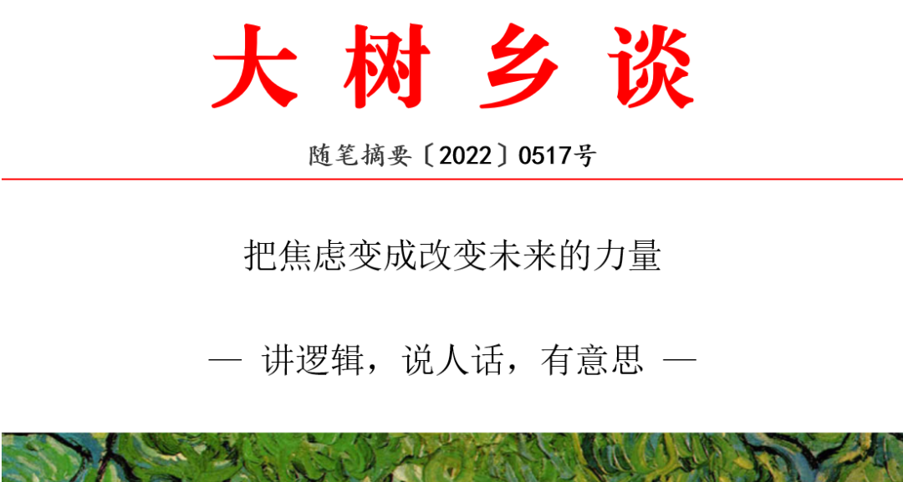

弯道保命，直道超车

今天头条提到，准备把半年前挖的坑填了，把《全球凛冬将至，我们个人该如何做好应对的准备》这篇分享了。现在不像前几个月感觉良好，很多人已经真切感觉到危机已经来了，情绪、意识都有了，这事儿说起来就更好入心了。 很多人很喜欢说“弯道超车”，本质是焦虑，看到前面有这么多领先者，就想着赶紧追上去，也体会下领先者的风光，更何况落后了很多资源、机会也少，生活体验也确实不好。 但是“弯道超车”如果容易，那就不值得津津乐道、奉为传奇，否则我们又何必把中国光伏和新能源汽车的崛起一说再说呢？
（中国光伏的崛起：《都1949年了，还想“划江而治”？》） 在赛场上，“弯道”确实可以超车，但是对参赛者的个人能力要求很高，而且也非常容易出风险。毕竟一般人到了弯道还是要减速的，否则容易摔倒，如果是开赛车一旦抓地不稳飞了出去，轻则退出比赛、重则车毁人亡。
个人发展也是一样的，人生是长跑，越是起跑线靠后、越是底蕴不足、越是有差距，反而越要考虑保命，别动不动把人生未来寄托在所谓的“创业”上，更别动不动压上所有，普通人赌不起。
这个道理小镇已经分享过《不要拿身家性命试错》。更多的话不多说了，普通人一定要有普通人的觉悟，在面对现实的基础上再思考到底应该怎么办。 比如现在很多人非常焦虑，特别想赚钱。可是经济好的时候都没赚钱，为啥反而在现在妄想赚更多？这现实吗？ 说白了，普通人本来就没啥钱，如果之前赚的钱多点、也有足够储蓄、平时准备充足，也不至于现在如此焦虑。
到了现在就更别焦虑了，先想办法解决现在面临的最直接的问题，然后好好想清楚以后怎么办。 等以后大环境好了，就别再躺平更别乱消费了，把现在焦虑的思考的变成行动，平时广积粮，出了事才安心。 过去几十年中国太顺了，很多人从来没有经历过任何真正的挫折，心气远大于能力和抗压力，得改了，毕竟凛冬将至，无一幸免。
其他文章推荐
■ 中央部委公务员的待遇与发展
如果喜欢，还请点赞、“在看”和关注吧 欢迎分享，让更多人发现“大树乡谈”